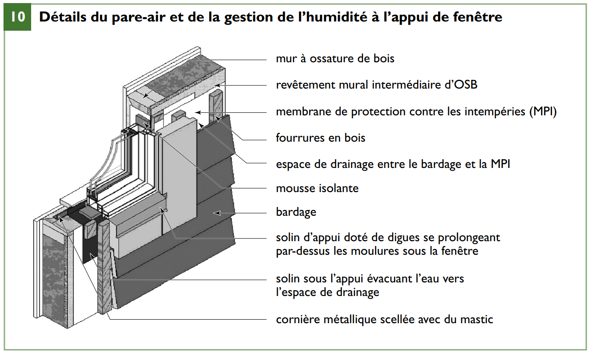
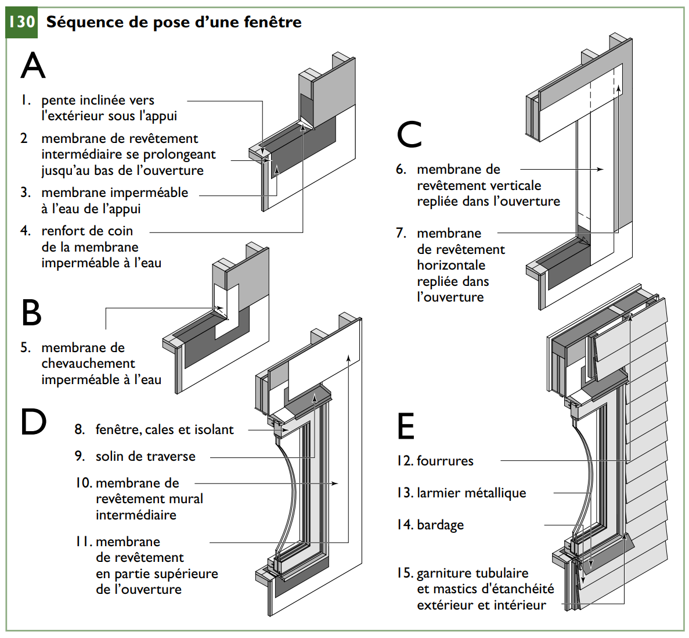
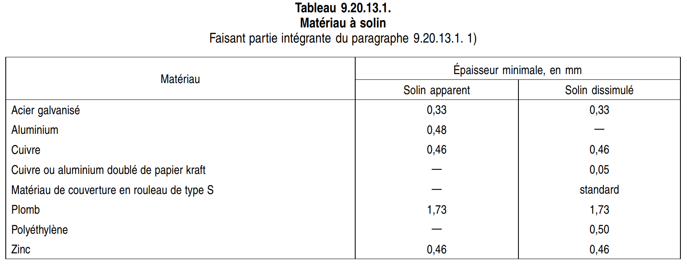

Solins & Étanchéité à l’eau
Activer le mode plein écran
/Attachments/Solins___Étanchéité_à_l’eau.jpg)
Propriétés
Les solins ont pour but d’empêcher l’eau de traverser l’enveloppe du bâtiment et d’intercepter et de diriger vers l’extérieur l’eau qui franchirait le premier plan de protection.
Le revêtement extérieur constitue habituellement le premier plan de protection.
Le deuxième plan de protection est ordinairement fourni par une membrane de revêtement intermédiaire ou un revêtement intermédiaire isolant, ainsi que par des solins, des mastics et d’autres matériaux.
Les solins ont pour but de réduire au minimum les infiltrations d’eau par les joints et à la jonction entre des matériaux différents.
Les solins se posent habituellement aux points de discontinuité sur les surfaces extérieures, par exemple :
- À l’extrémité supérieure d’un mur exposé
- À l’intersection du toit et d’un mur
- À l’intersection du toit et d’une cheminée
- Autour des points de pénétration dans le toit
- Aux noues
- Au-dessus et au-dessous des baies de portes et de fenêtres et d’autres points de pénétration des murs
- À l’arase des fondations, pour éloigner l’eau de la cavité murale
- Là où l’eau risque de s’infiltrer dans le bâtiment, à la jonction de deux matériaux. Les solins servent aussi à éloigner l’eau des éléments du bâtiment qui, lorsque soumis à des mouillages excessifs, sont susceptibles de se dégrader (détérioration, décoloration, érosion, dommages dus au gel ou corrosion). Comme on l’a vu au chapitre précédent, les solins font partie des première et deuxième ligne de défense contre l’infiltration d’eau de pluie.
/Attachments/9-details_du_pare-air-1.png)

Installation des fenêtres
Planifiez soigneusement l’emplacement des solins et l’écoulement de l’eau autour des fenêtres afin d’éviter les infiltrations dans le bâtiment et dans les structures murales adjacentes, et la façon dont les fenêtres s’intégreront au pare-air.
Un solin est nécessaire si le haut d’une fenêtre est à plus de 300 mm (12 po) d’un débord de toit qui fait saillie de 1,2 m (4 pi). Le solin supérieur doit partir du haut de la fenêtre ou de la porte et remonter sous le papier ou la membrane de revêtement. Lorsque les fenêtres et les portes des murs extérieurs ne sont pas dotées à leur base d’un solin incorporé, on doit en poser un entre la sous-face de la fenêtre ou de la porte et le mur sous-jacent.
Une mauvaise installation de fenêtre risque d’entraîner des problèmes d’infiltration d’eau et d’air et un mauvais fonctionnement des ouvrants.
La bonne pose d’une fenêtre consiste à faire chevaucher et à sceller sur le cadre une membrane de revêtement imperméable de façon à présenter un second plan de protection continu au pourtour de la fenêtre et, plus particulièrement, à assurer l’évacuation de l’eau pouvant être présente sous l’appui (voir l’illustration suivante).

Selon la technique retenue pour assurer l’isolation thermique et l’étanchéité à l’air au pourtour de la fenêtre (le vide entre la fenêtre et le bâti d’attente), on pourra procéder à cette étape après la mise en place de la fenêtre. Aujourd’hui, la technique la plus courante consiste à obturer le pourtour de mousse de polyuréthane à cellules fermées une fois la fenêtre posée pour ainsi faire d’une pierre deux coups.
Il importe de relier la fenêtre aux matériaux appropriés du mur adjacent afin de préserver la continuité des deux plans de protection, de même que l’étanchéité à l’air.
De préférence, on scellera la membrane d’étanchéité à l’air au rebord intérieur de la fenêtre afin de pouvoir facilement évacuer vers l’extérieur toute infiltration d’eau. Même si la présence d’un isolant entre le cadre et le bâti d’attente peut être avantageuse, la capacité d’évacuation de l’eau s’en trouve limitée.
Dans les endroits fortement exposés aux intempéries, il est préférable d’utiliser un mastic à l’intérieur ainsi qu’un isolant pouvant facilement sécher et évacuer l’eau. Si l’on isole au périmètre extérieur, il faut toujours prévoir entre l’isolant et le parement un espace pour l’évacuation de l’eau et l’assèchement des matériaux.
Pour assurer la continuité de la surface d’écoulement de l’eau au premier plan de protection, on aura recours à un mastic et à un profilé au périmètre de la fenêtre.
On recommande de poser un larmier sous l’appui puisqu’il empêche l’eau de s’écouler sur le parement et réduit la probabilité que l’eau remonte dans le mur ou tache les matériaux.
/Attachments/131-appui_de_fenetre.png)
L’illustration précédente présente deux façons de poser un larmier sur un appui de fenêtre.
On fixera d’abord solidement la fenêtre à l’ossature (voir l’illustration suivante).
/Attachments/132-mise_en_place.png)
Pour réduire les infiltrations d’air et d’eau, on pulvérisera une mousse ou on appliquera un mastic entre le bâti et la fenêtre.
Il doit aussi y avoir sous l’appui, sur toute la largeur du bâti d’attente, un solin flexible remontant d’au moins 100 mm (4 po) de chaque côté de l’ouverture.
On inclinera le solin d’appui vers l’extérieur pour éviter que l’eau ne pénètre dans le mur (Voir l’illustration suivante).
/Attachments/11-fenetre_dans_un.png)
Placer la fenêtre dans le bâti d’attente de manière que le vitrage se trouve dans le plan de l’isolant du mur.
Dans un mur épais, la fenêtre sera placée suffisamment à l’intérieur pour que la chaleur de la pièce « baigne » le vitrage intérieur afin de prévenir toute condensation, en retrait par rapport au mur extérieur afin de la protéger de la pluie et de la neige, mais aussi suffisamment proche de l’extérieur pour que les solins et les membranes ne soient pas démesurément larges.
Portes
On posera solins et mastics aux portes extérieures avec le même soin que s’il s’agissait de fenêtres.
Béton préfabriqué
Les « chaperons » en béton préfabriqué, en maçonnerie de pierre ou en brique viennent couronner un mur de maçonnerie ou peuvent servir de seuil de porte et d’appui de fenêtre. Ces éléments ont aussi pour but d’empêcher l’eau d’entrer par le haut du mur. Un chaperon posé par sections risque toutefois de fuir aux joints. Dans ce cas, il faut poser un solin d’étanchéité entre le chaperon et le haut du mur de maçonnerie pour empêcher toute infiltration d’eau (voir la figure 122). Un tel solin est également indiqué même si les chaperons ou appuis sont d’un seul tenant.
/Attachments/122-solin_d_etancheite.png)
Membrane de revêtement intermédiaire
La membrane de revêtement intermédiaire constitue la seconde ligne de défense contre l’infiltration d’eau de pluie et peut aussi, dans certains cas, servir de composant majeur d’un pare-air. Puisqu’un peu d’humidité pourrait se condenser dans le mur en hiver, la membrane de revêtement intermédiaire doit pouvoir la diffuser à l’extérieur pour prévenir la pourriture du bois. Les membranes autocollantes sont utilisées aux endroits qui reçoivent de fortes quantités d’eau comme les seuils, les appuis et les têtes des portes et fenêtres. Ces membranes sont fabriquées en rouleaux de 915 mm (36 po) de largeur. Elles sont résistantes, souples et peuvent être manipulées pour former des digues aux appuis et aux seuils, pour sceller les joints d’autres membranes de revêtement et pour colmater les joints entre les membranes de revêtement et les solins.
Protection contre la pluie
Extraits du Code de construction du Québec, Division B, Partie 9
9.20.13.1. Solins
- Les solins doivent être conformes au tableau 9.20.13.1.

2) Les solins d’aluminium en contact avec de la maçonnerie ou du béton doivent être recouverts ou séparés de la maçonnerie ou du béton par une membrane d’étanchéité.
9.20.13.2. Fixation des solins
1) Les dispositifs de fixation des solins doivent être protégés contre la corrosion dans le cas des solins métalliques, et ne doivent pas former de couple électrolytique avec les solins.
9.20.13.3. Emplacement
- Dans les murs ou contre-murs extérieurs en maçonnerie, un solin doit être posé :
a) au-dessous des appuis de fenêtre en maçonnerie jointoyée
b) au-dessus d’un mur en surélévation et sur sa face interne
c) sur le dessus d’un panneau en briques de verre
d) au-dessous des chantepleures; et
e) en partie supérieure des baies de portes et de fenêtres d’un mur extérieur si la hauteur entre le dessus de la moulure de la porte ou de la fenêtre et la rive inférieure du débord de toit dépasse 25 % de la largeur de surplomb du débord.
9.20.13.4. Prolongement
1) Les solins posés au-dessous d’un appui de fenêtre en maçonnerie jointoyée ou au-dessus d’une ouverture doivent partir de la face extérieure de la maçonnerie et remonter derrière le linteau ou l’appui.
9.20.13.5. Solins sous chantepleures
- Les solins posés sous des chantepleures dans un mur creux et un contre-mur extérieur en maçonnerie sur structure porteuse de maçonnerie doivent :
a) être encastrés d’au moins 25 mm dans la paroi intérieure;
b) se prolonger d’au moins 5 mm au-delà de la face extérieure de l’élément de construction au-dessous du solin; et
c) avoir une pente d’allure horizontale vers la paroi extérieure.
9.20.13.6. Solins sous chantepleures de contre-murs extérieurs en maçonnerie
1) Les solins posés sous les chantepleures du contre-mur extérieur en maçonnerie sur une structure porteuse en maçonnerie doivent être conformes aux exigences relatives aux solins des murs creux de l’article 9.20.13.5. précédent.
2) Les solins posés sous les chantepleures du contre-mur extérieur en maçonnerie d’un mur à ossature de bois doivent déborder d’au moins 5 mm par rapport à la face extérieure de l’élément de construction au-dessous du solin et remonter de 150 mm le long du mur à ossature de bois.
3) Si un mur à ossature de bois est recouvert d’une membrane de revêtement intermédiaire, d’un revêtement extérieur isolant rigide ne contenant pas de bois ou d’un isolant semi-rigide comportant une membrane de revêtement intégrée, les solins doivent remonter derrière la membrane de revêtement ou l’isolant.
4) Les solins décrits au paragraphe 2) peuvent être conformes aux exigences du tableau 9.20.13.1. relatives aux solins dissimulés.
9.20.13.7. Joints de solins
- Les joints des solins doivent être étanches à l’eau.